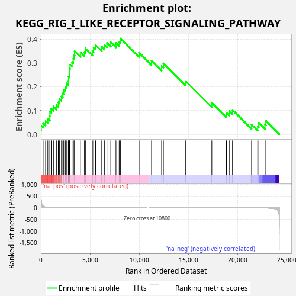
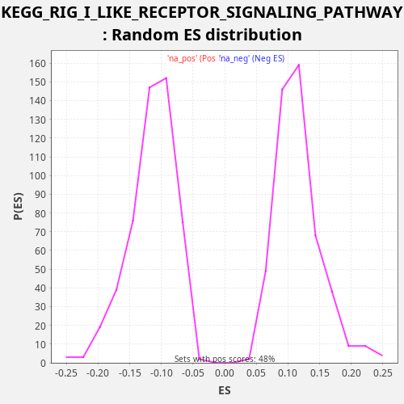

| Dataset | LabCL |
| Phenotype | NoPhenotypeAvailable |
| Upregulated in class | na_pos |
| GeneSet | KEGG_RIG_I_LIKE_RECEPTOR_SIGNALING_PATHWAY |
| Enrichment Score (ES) | 0.40250197 |
| Normalized Enrichment Score (NES) | 3.4953685 |
| Nominal p-value | 0.0 |
| FDR q-value | 0.0 |
| FWER p-Value | 0.0 |

| SYMBOL | RANK IN GENE LIST | RANK METRIC SCORE | RUNNING ES | CORE ENRICHMENT | |
|---|---|---|---|---|---|
| 1 | DDX3Y | 4 | 699.446 | 0.0187 | Yes |
| 2 | ISG15 | 31 | 388.825 | 0.0365 | Yes |
| 3 | TRIM25 | 232 | 82.050 | 0.0471 | Yes |
| 4 | IFIH1 | 483 | 32.788 | 0.0556 | Yes |
| 5 | CASP10 | 710 | 19.298 | 0.0652 | Yes |
| 6 | IRF7 | 915 | 13.725 | 0.0756 | Yes |
| 7 | CASP8 | 924 | 13.595 | 0.0941 | Yes |
| 8 | DHX58 | 1050 | 11.217 | 0.1078 | Yes |
| 9 | TRAF2 | 1280 | 7.745 | 0.1172 | Yes |
| 10 | NFKBIA | 1606 | 5.092 | 0.1227 | Yes |
| 11 | RIPK1 | 1774 | 4.038 | 0.1346 | Yes |
| 12 | OTUD5 | 1905 | 3.448 | 0.1481 | Yes |
| 13 | CXCL8 | 2096 | 2.772 | 0.1591 | Yes |
| 14 | IKBKB | 2234 | 2.419 | 0.1723 | Yes |
| 15 | RELA | 2329 | 2.207 | 0.1873 | Yes |
| 16 | IKBKE | 2486 | 1.923 | 0.1997 | Yes |
| 17 | CXCL10 | 2595 | 1.745 | 0.2141 | Yes |
| 18 | PIN1 | 2794 | 1.425 | 0.2248 | Yes |
| 19 | TBK1 | 2821 | 1.393 | 0.2426 | Yes |
| 20 | NFKBIB | 2915 | 1.268 | 0.2576 | Yes |
| 21 | AZI2 | 2917 | 1.267 | 0.2765 | Yes |
| 22 | SIKE1 | 2974 | 1.219 | 0.2930 | Yes |
| 23 | FADD | 3169 | 1.041 | 0.3039 | Yes |
| 24 | IRF3 | 3291 | 0.944 | 0.3177 | Yes |
| 25 | IKBKG | 3372 | 0.896 | 0.3333 | Yes |
| 26 | IFNB1 | 3433 | 0.858 | 0.3497 | Yes |
| 27 | NFKB1 | 4047 | 0.557 | 0.3432 | Yes |
| 28 | MAPK14 | 4434 | 0.420 | 0.3461 | Yes |
| 29 | DDX3X | 4530 | 0.396 | 0.3611 | Yes |
| 30 | IFNE | 5241 | 0.240 | 0.3506 | Yes |
| 31 | TBKBP1 | 5365 | 0.217 | 0.3644 | Yes |
| 32 | RNF125 | 5564 | 0.190 | 0.3751 | Yes |
| 33 | CYLD | 6192 | 0.125 | 0.3680 | Yes |
| 34 | TANK | 6482 | 0.101 | 0.3749 | Yes |
| 35 | MAP3K7 | 6716 | 0.085 | 0.3842 | Yes |
| 36 | MAP3K1 | 7110 | 0.065 | 0.3868 | Yes |
| 37 | TRADD | 7637 | 0.041 | 0.3839 | Yes |
| 38 | TRAF6 | 7964 | 0.031 | 0.3893 | Yes |
| 39 | IL12A | 8102 | 0.027 | 0.4025 | Yes |
| 40 | MAPK9 | 9989 | 0.002 | 0.3434 | No |
| 41 | CHUK | 11254 | -0.000 | 0.3100 | No |
| 42 | ATG12 | 12277 | -0.004 | 0.2866 | No |
| 43 | MAPK12 | 12459 | -0.005 | 0.2980 | No |
| 44 | TNF | 14727 | -0.052 | 0.2232 | No |
| 45 | TRAF3 | 17381 | -0.228 | 0.1324 | No |
| 46 | MAPK11 | 18865 | -0.471 | 0.0899 | No |
| 47 | ATG5 | 19147 | -0.548 | 0.0972 | No |
| 48 | MAPK13 | 19482 | -0.658 | 0.1023 | No |
| 49 | TKFC | 21421 | -2.028 | 0.0410 | No |
| 50 | NLRX1 | 22043 | -3.326 | 0.0342 | No |
| 51 | MAPK8 | 22156 | -3.702 | 0.0485 | No |
| 52 | MAPK10 | 22783 | -7.464 | 0.0414 | No |
| 53 | MAVS | 22872 | -8.362 | 0.0567 | No |

{kind=link}
{kind=link}